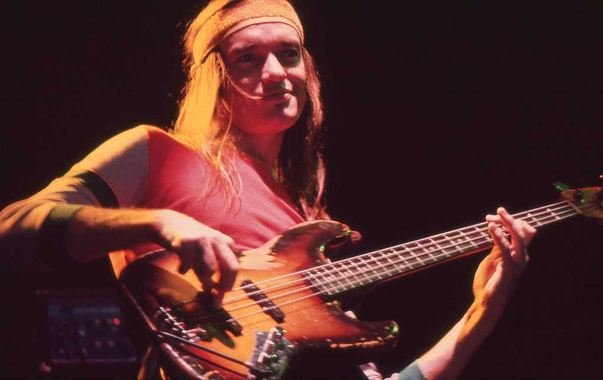

Jaco Pastorius

Jaco Pastorius in 1980
John Francis Anthony "Jaco" Pastourius III is widely regarded as one of the most important bass guitarists in the history of the instrument. Throughout my career, I have constantly been inspired by his impeccable technique, his advanced musicianship, and his originality.
Career Highlights
- With his use of the fretless bass, Jaco defined a style of playing that was incredibly original and that has inspired many followers.
- Jaco popularized the use of harmonics on the bass and integrated them seamlessly into his technique.
- Jaco was a master of 16th note grooves. He was able to manipulate the accents of his notes in a sophisticated way.